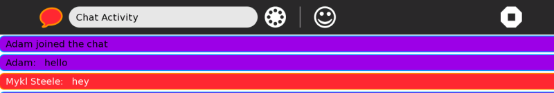
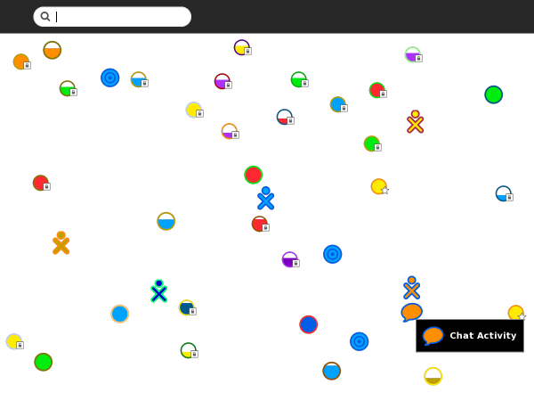
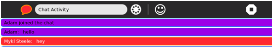
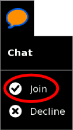
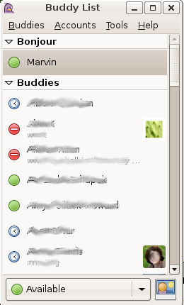
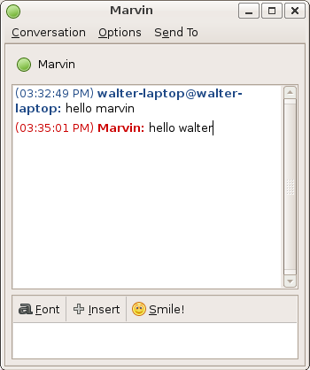
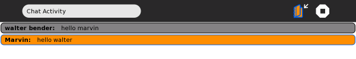

Chat¶
About¶
The Chat Activity is used to exchange messages with your friends or classmates. You can chat about a topic you are studying or you can share something private that happened in your life. You need at least two active XOs to chat - your own and the one that your friend uses.

Where to get Chat¶
Chat activity is available for download from the Sugar Activity Library: Chat
The source code is available on GitHub.
Using Chat¶
Starting Chat¶
Chat creates text conversation with others XO users. Chat is a shared activity, with one or many other “Friends” in your “Neighborhood”, or those connected to your olpc mesh network.
The Chat Activity icon is a speech bubble. To add the Chat Activity to your home view, click the star on the left side of the icon. Now click on the Chat icon to start.
Join a Chat¶
You can join a Sugar Chat that has already been started.
Two or more XO computers from One Laptop Per Child can speak to each other directly without an Internet connection. This is a direct connection. You can also chat with people on the Internet who use Sugar. This section describes joining a chat between two or more XO computers from One Laptop Per Child.
First, look at the Neighborhood View to see if there is an existing Chat you want to join.
CHAT SAFELY: Only chat with someone you know. If a someone invites you to chat, don’t chat with them unless you know them.

If you see a XO icon with a little speech bubble icon next to it, that person is in a shared Chat. Several people may be around the Chat icon, showing a group Chat.
Click the little speech icon, and select the Join option.
Then the Chat Activity starts, connected to the shared Chat. You see the other people in the Chat, on the Frame.
Chatting¶
Once you are in the Chat Activity, you can begin typing to send a message and chat with the other person. After you type a message you can press the enter key to send it.

To enter messages type them in the box at the bottom of the Chat Activity. Always press enter at the end of the message. Once you press enter your message appears on your friend’s computer.
Accept an invitation to chat¶
You may be invited to chat. An invitation appears as a little speech icon in the upper-left of the screen in every view. (The invitation also appears on the Frame.) The colors of the icon match the colors of the friend who sent the invitation.
You accept the invitation by hovering over the icon and selecting Join. You decline the invitation by selecting Decline.

Things to Do with Chat¶
Chat is a great for sending messages back and forth with a friend, socializing, and working together on projects.
Remember that being polite on a computer is just as important as being polite when you’re speaking with someone.
Be polite. Try not to interrupt.
Read through what people are saying before you say something.
Don’t type in ALL CAPITAL LETTERS. This style is considered rude as it is like shouting at someone.
If you do not speak the same language as another person it may be difficult to communicate with Chat. Be patient. If you have an Internet connection, you can try going to www.google.com/translate and type in a phrase that you want to say in another language so you can be friendly online.
Fun
It can be fun to make words shorter when typing in a Chat Activity because it is faster, like texting (sending messages) on a mobile phone. For example instead of typing in “how are you?”, you can type in “how r u?”
The following are some ways you might like to try using Chat:
Arrange a time to meet friends to play.
Organize a community gathering.
Bring friends together to talk about doing a group project.
Brainstorm ideas (either “fast and furious” or by taking turns).
Ask your teacher questions about your homework.
Use Chat and write a story with friends online using the Write Activity.
Use Chat to practice writing in a foreign language (see if you can find a native speaker to chat with).
Organize other Sugar or XO users to meet and learn from each other.
Use Chat to communicate with a grandparent or other family member.
Interview an expert using the Chat Activity as if they were in the classroom, especially an expert who wouldn’t otherwise be able to visit.
Take group discussion notes.
Play a word-association game such as typing the first word that comes to mind when your friend types red.
Play a role-playing game (for example, have a friend pretend to be a character from a book you are reading, and chat with the role-playing friend).
Use emoticons in Chat¶
There are ways to tell friends how you feel just by using letters - they can let someone know if you are happy, sad, or having fun. When you make letters look like a face, they are called emoticons.
Some are written so that you read them sideways.
This is a happy face:
:)
This is a sad face:
:(
This is a wink:
;)
See if you can find the keys on the keyboard to make the faces
The two dots are the colon key : and the semicolon key ;
The mouth are the parentheses keys ()
You can also make faces that go across:
Happy
(^_^)
Sad
(<_>)
Winking (^_~)
What other emoticons can you create with text in the Chat Activity?
Can you draw pictures using only the text symbols on your keyboard? This combination of a symbol and a number looks like a sideways heart <3. “I <3 my XO” means, “I love my XO.”
Make Friends¶
When you are in the Neighborhood View, if you move the pointer over someone, you can see their name, and click Make Friends. When you Make Friends, your new friend appears in your Group View list.
The Group View list helps you keep a list of your friends online who you like chatting with.
Read a past log of conversations¶
If you open the Journal Activity to open the Chat in the detail view, you can choose to open the Chat Activity with the Write Activity instead of the Chat Activity window.
Notes for parents and teachers¶
Chat presents a great opportunity engage children in reading and writing. The natural inclination for children to socialize and express themselves can be channeled in some of the exercises outlined above. (Some children who are by their nature shy and reserved, are more confident speaking up in a chat room.) Chat can be motivating and is an authentic use of language skills, however, preparation and supervision are recommended.
Prepare your children and students:
Remind them never to chat with someone they don’t know.
Remind them to be courteous and never to use language they wouldn’t be comfortable with in their oral communication (for example, it’s OK to disagree, but not to be disagreeable).
Prepare your chat session:
Some teachers prepare questions in advance. They can paste these questions into the Chat session from the Clipboard or Write Activity—this helps them stay on task and keeps the pace of the session lively.
Limit the number of students participating in the Chat session; more that 10–12 participants makes a session chaotic.
Ask your students to prepare by posing questions in advance.
As in any classroom discussion, keep the conversation focused on just one or two topics.
IT IS SOMETIME USEFUL TO USE ALL-CAPS TO GET EVERYONE’S ATTENTION.
Advanced features¶
Computers not running Sugar can initiate chat connections to a Sugar user by running a Jabber (XMPP) client, either with both computers registered on the same Jabber server or by running a link local XMPP account such as Empathy with salut or Pidgin with Bonjour.
Here’s an example of a buddy list on another non-Sugar computer.

When you initiating the chat on a non-Sugar computer using a Jabber client, an invitation appears on the Sugar computer and the Sugar user can chat with you as usual except that the colors of the non-Sugar participant’s response lines are gray as shown below.
Here’s what the non-Sugar computer sees on their Jabber client.

And here’s the response as seen on the Sugar computer.

CHAT SAFELY: Remember, only chat with someone you know. If someone invites you to chat, don’t chat with them unless you know them. It’s perfectly okay to refuse a chat request.
Note to parents and teachers¶
You can use this feature to chat with Sugar-enabled computers from non-Sugar-enabled computers; hence you can chat with your child or class from a conventional desktop or laptop computer.
Reporting Problems¶
Please report bugs and make feature requests at chat/issues.